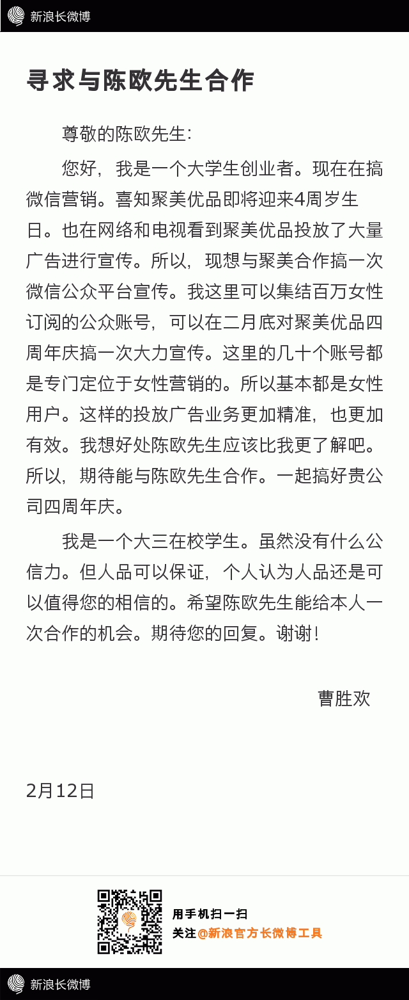

帮转//@曹胜欢:长微博工具实在不给力，排版实在不好弄。先这样吧！请@付敬溪 @数据牧羊人 @研究者July @夏月1990REALLY @Evan余佳文 @CSDN高校俱乐部 @Ada李力 @蒋涛CSDN @Riddle_god汪汪 @我是你的主题曲哥哥 @Geek_耕畅 @justdb @张卫滨1895 各位好友帮忙转发。谢谢！@曹胜欢:《寻求与陈欧先生合作》。我这样是不是很傻很天真？不管怎么样，还是要试一试。请看到的朋友帮忙转发并@ 一下@聚美陈欧 。非常感谢！...畅读版【网页链接】 